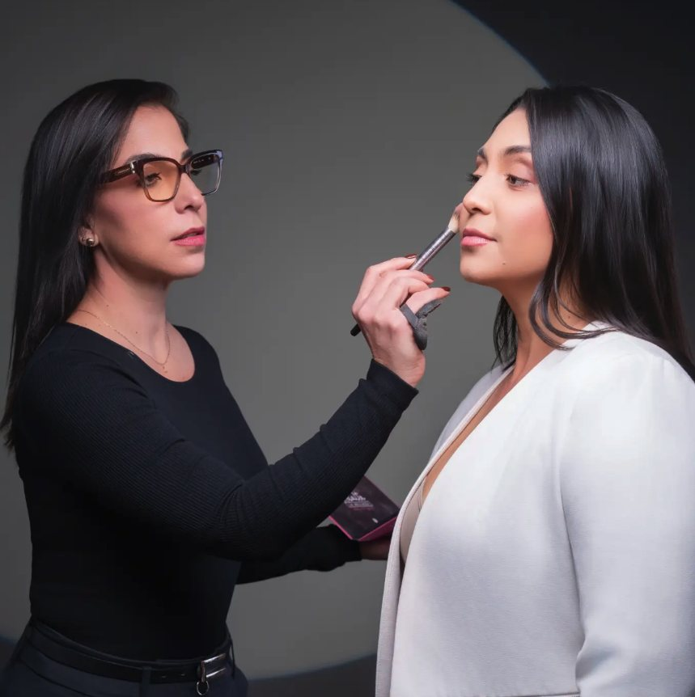

Maquillarte fácil a cualquier edad: 6 claves para empezar

En mis talleres llegan mujeres de todas las edades con la misma duda: “¿y si no me sale?”. La buena noticia es que maquillarse bien no depende de la edad ni de tener cientos de productos. Depende de conocer tu piel y de aprender unas pocas técnicas. Estas son las claves con las que siempre empiezo.
1. Todo parte por preparar la piel
Una piel limpia e hidratada es el mejor primer paso. Una buena crema hidratante y, de día, protector solar, hacen que la base se deslice mejor y se vea natural. Cuando la piel está bien preparada, necesitas mucho menos producto.
2. Elige el tono de base con luz natural
Prueba la base en la mandíbula, no en la mano, y mírala junto a una ventana. El tono correcto es el que “desaparece” en tu piel. Una base demasiado clara o demasiado oscura es lo que más delata un maquillaje.
3. Menos producto, más técnica
Aplica capas finas y construye solo donde lo necesitas. Con los años, las texturas cremosas y ligeras suelen favorecer más que los polvos en exceso, porque no se marcan en las líneas de expresión.
4. Ilumina tu mirada
Unas cejas definidas de forma natural enmarcan el rostro y cambian por completo la expresión. Súmale máscara de pestañas y un corrector bien difuminado en la zona que más lo necesite: tu mirada se verá más descansada al instante.
5. Un toque de color que te dé vida
El rubor es el gran olvidado y uno de los productos que más rejuvenecen. Aplícalo en la parte alta de las mejillas, difuminando hacia las sienes. En los labios, elige un tono que se parezca al de tus labios, pero un poco más intenso.
6. Practica con tus propios productos
La técnica se aprende haciendo. Por eso en mis talleres y asesorías personalizadas trabajamos con lo que tú usas y te enseño qué hacer, cómo hacerlo y por qué hacerlo. Cuando entiendes eso, todo cambia, y ya no dependes de nadie para sentirte bonita frente al espejo.
¿Te gustaría aprender conmigo? Los talleres tienen cupos limitados para que la experiencia sea cercana y personalizada.
Escríbeme por WhatsApp y conversemos sobre lo que necesitas.
Escribir a Mari